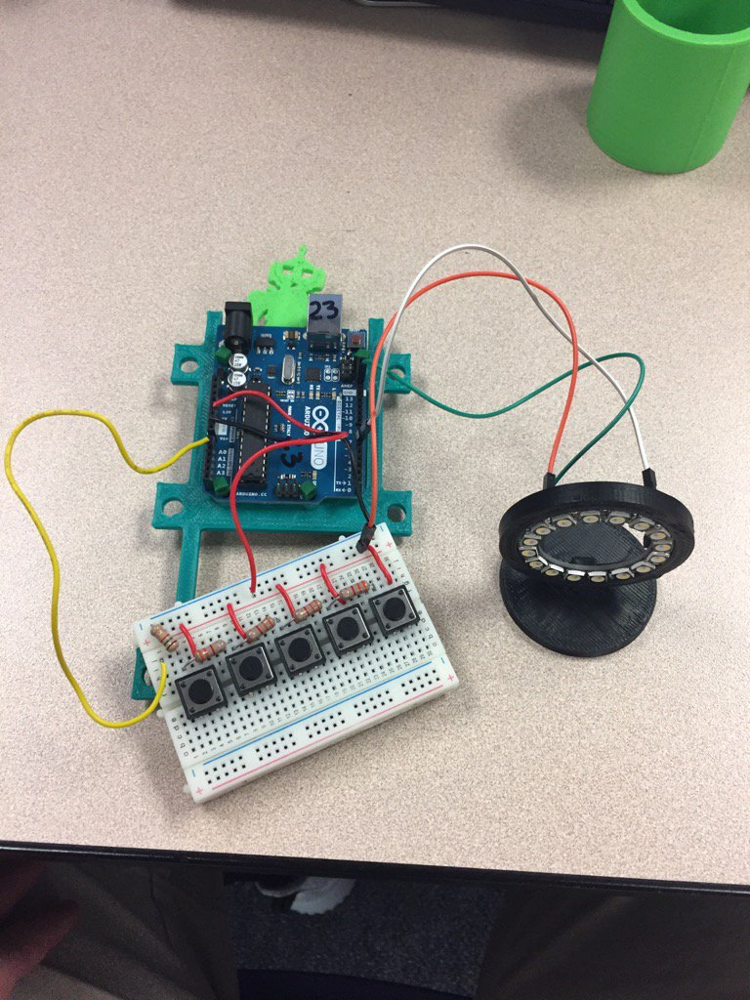

"if you judge a fish on its ability to climb a tree, it will
spend its entire life believeing that its stupid" ~Albert Enstien
Mission Statement
My name is Ross Rawlings, I am a senior at Hanford Highschool. Last year I was enrolled in the tri-tech skills center
computer science/cyber security program. I hope to go into the computer/electrical engineering field. I hope to join
the nuclear engineering programin the navy and I am working towards my future everyday!
The Tri-Cities has all kinds of amazing S.T.E.M. jobs, hopefully after my time in the navy
I will be able to find one that fits me well.
Special Skills
During my enrollment at Tri-Tech I have learned many things. One thing I learned was how to install operating systems
like Windows, Debian, Centos, and Ubuntu. During this course Mr. Coleman taught us more things than I can list, like DHCP server
configuration, Soldering, Website design and Database management. I have also worked with bread boards to make controllers for a LED
ring(see below picture). I am very excited to learn about my future career field. I was lucky enough to secure an internship at Energy Northwest, specifically
their Nuclear power station. While I was at CGS, I learned the importance of procedure use and human performance. When you are working with materials that
can seriously harm you, it is very important to do the work in a safe manor. I was responsible for making procedures that plant operators
use to manipulate the plant. I hope to bring some of the keys to success that I learned at CGS with me
to my furture employment and my everyday life. Another thing I learned during my internship was time management. My supervisors
expected the same out of me as they expeced from the rest of the emplyees. Many of the tasks I did were from other groups, so my
supervisor did not know what I was doing, but she expected me to be on time, with quality work.
